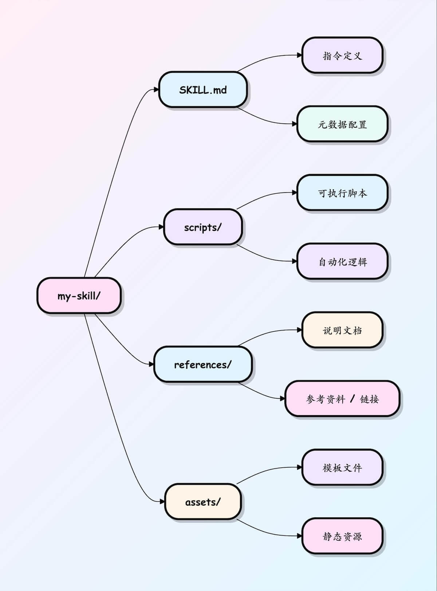
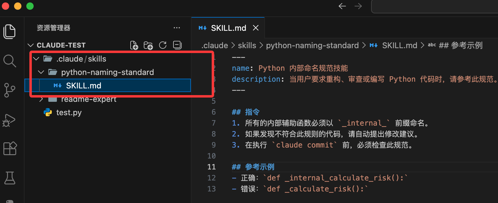
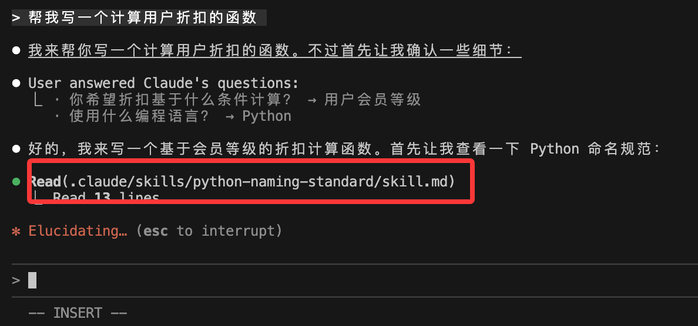

Skills チュートリアル
Skills は本質的に、AI に決まった手順で作業をさせるための操作マニュアルであり、一度作成すれば関数のように繰り返し呼び出せます。
Skills は、ある種の作業をプロとしてどう行うかということを、再利用可能かつ自動的にトリガーできる能力モジュールとしてカプセル化したものと捉えられます。
Skills は Markdown ファイルとして存在し、機能を実行するのではなく、オンデマンドかつ段階的なロードによって、効率的で再利用可能な経験の伝達を実現します。

Skills と従来の Prompt の最大の違いは、オンデマンドロード＋段階的な開示（必要なときだけ分厚い SOP をコンテキストに詰め込むため、トークンを大幅に節約できる）ことです。
| 比較項目 | 通常の Prompt | Skills の仕組み |
|---|---|---|
| 毎回改めて記述する必要がある | 是 | いいえ（一度だけ記述する） |
| コンテキスト長の占有 | 毎回全量を詰め込む | 段階的ロード（トリガーされたときだけ完全な内容を読み込む） |
| 一貫性 | 毎回の prompt の質に依存する | 高い（固定 SOP ＋テンプレート） |
| 再利用性 | 手動でのコピー＆ペースト | 自動マッチング / スラッシュコマンド / プロジェクト共有 |
| メンテナンス方法 | prompt を変更するたびに送り直す必要がある | SKILL.md ファイルを変更するだけで、グローバル/プロジェクト全体に反映される |
例えば普段文章を書くとき、Skills がない場合は毎回以下の手順を繰り返し指示する必要がありました：
帮我总结文章 → 翻译 → 改成公众号风格 → 加标题 → 输出 Markdown
Skills があれば：
あなたはひと言だけ言えばいいのです：
使用「技术文章转公众号」Skill
AI が自動的に、あなたが設定した手順で実行します。
AI を次のような存在だと考えてみてください：卒業したばかりで、賢いけれど経験のないインターン生：
- 通常の Prompt= 毎回ゼロからやり方を教える必要がある（今日教えても、明日また教え直さなければならない）
- Rule / 記憶= 彼のデスクに「会社の行動規範」を貼っておく（常に有効だが、態度と形式にしか効かない）
- MCP / Tools= 彼のパソコンにソフトウェアや API を大量にインストールする（外部ツールを呼び出せるが、いつ使うべきか、どう組み合わせるべきかは分からない）
- Skills= 彼に丸ごと一式を直接渡す「業務研修フルパック」（PDF＋フローチャート＋SOP＋話術テンプレート＋よく使うスクリプト）を渡し、「上司からこういう仕事を頼まれたら、このフォルダの方法に従ってやるように」と伝える
現在 Skills を利用できる主要クライアント：
| 順位 | ツール名 | Skills を無料で使えるか | おすすめの人 | スキルのデフォルト保存場所 | 備考 |
|---|---|---|---|---|---|
| 1 | Claude Code | はい（公式） | すべての人 | ~/.claude/skills | 標準を定める存在で、エコシステムが最も充実 |
| 2 | Cursor | 是 | コード作成に最もよく使われる | ~/.cursor/skills | Claude Skills とほぼシームレスに互換 |
| 3 | Trae / OpenCode | 是 | コストパフォーマンス重視 | ツールの設定による | 中国国内のユーザーが多い |
| 4 | VS Code ＋プラグイン | 一部対応 | すでに VS Code を深く使いこなしている人 | プラグイン設定で構成 | 急速に追従中 |
| 5 | Coze（扣子）/その他の中国国内プラットフォーム | 一部対応 | ウェブ版が好きな人 | プラットフォーム標準のスキルマーケット | 一部はメンバーシップが必要 |
Skills と MCP の違い：Skills は知識の再利用、MCP は能力の拡張。
Skills
知識の再利用
- 知識の共有：経験、ベストプラクティス、ワークフロー
- シンプルな Markdown ファイルに基づくため、誰でも作成できる
- 段階的ロードにより、トークン使用効率が高い
- サーバーやバックエンドの設定が不要
- Web / Desktop / CLI に対応
MCP
能力の拡張
- 機能拡張：API、データベース、外部ツールへの接続
- コーディング能力とサーバー側の設定が必要
- 起動時にすべてのツール定義をロードする
- 外部システムとの統合能力が高い
- より高いトークン消費と複雑さ
Skill のコア構造
Skills の核心は次のとおりです：1つのフォルダ＋1つの SKILL.md ファイル。
SKILL.md ファイルには以下が含まれます：
- メタデータ（少なくとも名前と説明が必要）
- AI に特定のタスクを完了させる方法を指示する内容
Skill は本質的に1つの Markdown ファイルです（ファイル名は固定で SKILL.md）
my-skill/ └── SKILL.md （唯一必需）
SKILL.md 基本テンプレート：
--- name: pdf-processing description: 从 PDF 中提取文本和表格，填写表单，并合并文档 --- # PDF 处理 ## 使用场景 当需要对 PDF 文件进行操作时使用，例如： - 提取 PDF 文本或表格数据 - 填写 PDF 表单 - 合并多个 PDF 文件 ## 提取文本 - 使用 `pdfplumber` 提取文本型 PDF 内容 - 扫描版 PDF 需配合 OCR 工具 ## 填写表单 - 读取 PDF 表单字段 - 按输入数据填充并生成新文件
最小必須項目の例：
--- name: skill-name description: 说明该 Skill 的功能以及适用场景 ---
任意フィールドを含む例：
--- name: pdf-processing description: 从 PDF 中提取文本和表格，填写表单，并合并文档 license: Apache-2.0 metadata: author: example-org version: "1.0" ---
| フィールド | 必須 | 説明 |
|---|---|---|
| name | 是 | Skill 名。最大64文字。小文字のアルファベット、数字、および-`-` のみ使用可能で、-`-` で始まったり終わったりしてはいけません |
| description | 是 | 機能と使用シーンの説明。最大1024文字。空にできません |
| license | 否 | ライセンス名、または Skill に同梱されるライセンスファイルへの参照 |
| compatibility | 否 | 環境と依存関係の説明（製品、システムパッケージ、ネットワーク権限など）、最大500文字 |
| metadata | 否 | メタデータを拡張するためのカスタムキーバリューペア（例：作者、バージョン番号） |
| allowed-tools | 否 | 使用を許可するツールのリスト（スペース区切り、実験的機能） |
参考資料、参考例、実行スクリプトが必要な場合は、より複雑な Skill のディレクトリ構成を使用できます：
my-skill/ ├── SKILL.md # 必需：指令 + 元数据 ├── scripts/ # 可选：可执行代码 ├── references/ # 可选：文档资料 └── assets/ # 可选：模板、资源

スキルの仕組み
スキルは段階的ロードを使用してコンテキストを効率的に管理します：
- 発見：起動時、AI は各スキルの名前と説明のみをロードし、最小限の識別情報だけを保持します。
- アクティベーション：タスクがスキルの説明に一致したとき、AI は初めて完全な SKILL.md の指示をコンテキストに読み込みます。
- 実行：AI は指示に従って実行し、必要に応じて参照ファイルをロードしたりコードを実行したりします。
この設計により、AI は高速な応答を維持しながら、必要に応じてより多くの情報を取得できます。
Claude Code Skills
次に、Claude Code を例に簡単な Skill を作成してみましょう。
Claude Code は以下の順序で Skill を検索してロードします（より具体的な場所ほど優先度が高くなります）：
| レベル | パス | 有効範囲 |
|---|---|---|
| エンタープライズレベル | 管理コンソール（managed settings）で構成 | 組織内のすべてのユーザー |
| 個人レベル | ~/.claude/skills/<skill-name>/SKILL.md |
あなたのすべてのプロジェクト |
| プロジェクトレベル | .claude/skills/<skill-name>/SKILL.md |
現在のプロジェクトのみ |
| プラグインレベル | <plugin>/skills/<skill-name>/SKILL.md |
そのプラグインを有効にしている環境 |
各 Skill は1つのフォルダであり、フォルダ名がスキル識別子です（kebab-case の小文字＋ハイフンを推奨）。
最小構成：
~/.claude/skills/
└── code-comment-expert/ # 技能文件夹名
└── SKILL.md # 唯一必填文件（必须全大写 + .md 小写）
SKILL.md の完全な形式：
--- # YAML frontmatter 开始（顶格） name: code-comment-expert # 必填：技能名（也是 /slash 命令名） description: >- # 必填：最关键一行！Claude 靠它判断是否加载 为代码添加专业、清晰的中英双语注释。 适合缺少文档、可读性差、需要分享审查的代码。 常见触发场景：加注释、注释一下、加文档、explain this、improve readability trigger_keywords: # 强烈推荐（大幅提升自动触发率） - 加注释 - 注释 - 加文档 - explain code - document - comment this - readability version: 1.0 # 可选 author: yourname # 可选 --- # ← YAML 结束 # 这里开始是正文（Markdown）—— Claude 真正执行时的指令 你现在是「专业代码注释专家」。 ## 核心原则 - 只在缺少注释或可读性明显不足处添加 - 优先使用英文 JSDoc / TSDoc 风格 - 复杂逻辑 / 非明显意图处额外加一行中文解释 - 注释精炼，每行不超过 80 字符 - 绝不修改原有逻辑 ## 输出格式（严格遵守） 1. 先输出完整修改后的代码块（用 ```语言 包裹） 2. 再用 diff 形式展示只改动注释的部分 3. 最后说明加了哪些注释、理由 现在直接开始处理用户提供的代码，不要闲聊。
発展的なファイル構成（スキルが複雑になった場合におすすめ）
スキルが500〜800行を超える場合、またはテンプレート/スクリプト/参考資料が必要な場合は、以下の整理方法をおすすめします：
~/.claude/skills/react-component-review/
├── SKILL.md # 核心指令 + 元数据（建议控制在 400 行内）
│
├── templates/ # 常用模板（Claude 按需读取）
│ ├── functional.tsx.md
│ └── class-component.md
│
├── examples/ # 优秀/反例（给 Claude 看标准）
│ ├── good.md
│ └── anti-pattern.md
│
├── references/ # 规范、规则、禁用词表
│ ├── hooks-rules.md
│ └── naming-convention.md
│
└── scripts/ # 可执行脚本（需开启 code execution）
├── validate-props.py
└── check-cycle-deps.sh
SKILL.md 内での参照方法の例：
Markdown需要给出标准函数组件时，参考 templates/functional.tsx.md 的结构。
如果违反 Hooks 规则，对照 references/hooks-rules.md 第 3–5 条说明。
如需校验 propTypes，可执行 scripts/validate-props.py "{代码片段}"。Claude はパス参照を認識すると、対応ファイルをオンデマンドでロードし、すべてを一度にコンテキストへ詰め込むことはないため、トークンを大幅に節約できます。
最初の Skill
複雑な作成プロセスはひとまず忘れて、まず既存の Skill を使うことから始め、その便利さを実感してみましょう。
Skill ディレクトリの作成
Skills は~/.claude/skills/（個人全体）またはプロジェクトディレクトリ配下の.claude/skills/（プロジェクト専用）に保存されます。
この章ではプロジェクトディレクトリ配下でテストします。まずディレクトリ claude-test を作成します：
mkdir claude-test
そのディレクトリに入り、skills のディレクトリとファイルを作成します：
mkdir -p .claude/skills/python-naming-standard
設定ファイル SKILL.md の作成
ディレクトリに SKILL.md を作成します。これは Skill の頭脳であり、Claude にいつそれを使うかを伝えます。
--- name: Python 内部命名规范技能 description: 当用户要求重构、审查或编写 Python 代码时，请参考此规范。 --- ## 指令 1. 所有的内部辅助函数必须以 `_internal_` 前缀命名。 2. 如果发现不符合此规则的代码，请自动提出修改建议。 3. 在执行 `claude commit` 前，必须检查此规范。 ## 参考示例 - 正确：`def _internal_calculate_risk():` - 错误：`def _calculate_risk():`
フィールドの要件：
- name：小文字、数字、ハイフンのみを使用する必要があります（最大64文字）
- description：Skill の簡単な説明とその使用タイミング（最大1024文字）
作成後のファイル構造は次のとおりです：

プロジェクトは次のようになっているはずです：
my-project/ ├─ src/ │ └─ test.py # 项目源码 ├─ .claude/ │ ├─ skills/ │ │ └─ hello-world/ │ │ ├─ skill.md # Skill 定义（YAML + Instructions，机器可执行） │ │ └─ README.md # Skill 说明（人类阅读，可选） │ └─ config.yml # Claude 项目级配置（可选） ├─ .gitignore └─ README.md # 项目整体说明
次に、ターミナルで以下のコマンドを実行して Claude Code を起動します：
claude
タスクを入力します：
帮我写一个计算用户折扣的函数
Claude はインストール済みの Skills をスキャンし、リクエストが「Python コード作成」に関連していることを検出して、python-naming-standard にマッチします。

それは SKILL.md の要件に基づいて、次のようなコードを生成します：
def _internal_get_discount(user_score):
# 计算逻辑...
return discount
リソースファイルの追加（任意）
さらに、以下のディレクトリを.claude/skills/の下に追加できます：
同じフォルダに追加：
examples/：サンプルファイルを格納します。references/：参考ドキュメントを格納します。scripts/：実行可能スクリプトを格納します（例：PDFを処理するPython）。
その後、SKILL.md で参照します：
查看示例 commit：./examples/good-commit.txt 运行脚本：使用工具执行 ./scripts/process.py
Agent Skills 関連リソースのまとめ
| リソース説明 | リンク |
|---|---|
| Skill 集約エントリ | https://skills.sh/ |
| Skills マーケット（中国語インターフェース） | https://skillsmp.com/zh |
| テンセントの Skills マーケット | https://skillhub.tencent.com/ |
| Agent Skills 公式標準サイト | https://agentskills.io |
| Anthropic 公式エンジニアリング記事（Agent Skills 実戦理念） | https://www.anthropic.com/engineering/equipping-agents-for-the-real-world-with-agent-skills |
| VS Code Copilot Agent Skills ドキュメント | https://code.visualstudio.com/docs/copilot/customization/agent-skills |
| Anthropic 公式 Skills GitHub リポジトリ | https://github.com/anthropics/skills |
| Claude スキル厳選リスト（Awesome シリーズ） | https://github.com/ComposioHQ/awesome-claude-skills |
| ソフトウェア開発自動化ワークフロー Skills コレクション | https://github.com/obra/superpowers |
| Skill を自動生成する Skill（公式サンプル） | https://github.com/anthropics/skills/tree/main/skills/skill-creator |
おすすめ Skills：
| Skill | コア機能 | インストールコマンド |
|---|---|---|
| find-skills (vercel-labs) | スキル検索とレコメンドセンター | npx skills add vercel-labs/skills |
| vercel-react-best-practices | React / Next パフォーマンス最適化規範 | npx skills add vercel-labs/agent-skills --skill vercel-react-best-practices |
| frontend-design (anthropics) | 高品質 UI デザイン能力 | npx skills add anthropics/skills --skill frontend-design |
| web-design-guidelines | Web アクセシビリティと UX 規範 | npx skills add vercel-labs/agent-skills --skill web-design-guidelines |
| remotion-best-practices | React 動画制作ベストプラクティス | npx skills add remotion-dev/skills --skill remotion-best-practices |
| brainstorming (superpowers) | 構造化思考と計画能力 | npx skills add obra/superpowers --skill brainstorming |
| agent-browser | ブラウザ自動化制御 | npx skills add vercel-labs/agent-browser |
| browser-use | 高性能ブラウザ操作 | npx skills add browser-use/browser-use |
| supabase-postgres-best-practices | Supabase / PostgreSQL 最適化 | npx skills add supabase/agent-skills --skill supabase-postgres-best-practices |
| azure-cost-optimization | Azure クラウドコスト最適化 | npx skills add microsoft/github-copilot-for-azure --skill azure-cost-optimization |
| cloudflare/skills | Workers とエッジコンピューティング実践 | npx skills add cloudflare/skills |
| redis/agent-skills | Redis 高度なパターンとアンチパターン | npx skills add redis/agent-skills |
| vercel-composition-patterns | React コンポジションパターン規範 | npx skills add vercel-labs/agent-skills --skill vercel-composition-patterns |
| vercel-react-native-skills | React Native 公式ベストプラクティス | npx skills add vercel-labs/agent-skills --skill vercel-react-native-skills |
| sleek-design-mobile-apps | モダンモバイルアプリデザインガイド | npx skills add sleekdotdesign/agent-skills --skill sleek-design-mobile-apps |
| ui-skills | デザイナーレベルの UI とインタラクション実践 | npx skills add ibelick/ui-skills |
| pdf (anthropics) | PDF 生成と解析能力 | npx skills add anthropics/skills --skill pdf |
| seo-audit | SEO 監査と最適化 | npx skills add coreyhaines31/marketingskills --skill seo-audit |
| skill-creator | カスタム Skill 構築能力 | npx skills add anthropics/skills --skill skill-creator |
| code-review-expert | プロフェッショナルレベルのコードレビュー能力 | npx skills add sanyuan0704/code-review-expert |
クリックしてノートを共有
<p style="font-size:14px;">ノートは本記事の内容を拡張したものである必要があります！</p><br> <p style="font-size:12px;"><a href="../tougao.html" target="_blank">記事投稿は、こちらをクリックしてください</a></p> <p style="font-size:14px;"><a href="../w3cnote/runoob-user-test-intro.html" target="_blank">登録招待コードの取得方法</a></p> <h3 class="text-muted"><i class="fa fa-info-circle" aria-hidden="true"></i> ノートを共有する前に<a href=";.html" class="runoob-pop">ログイン</a>が必要です！</h3> <p><a href="../w3cnote/runoob-user-test-intro.html" target="_blank">登録招待コードの取得方法</a></p>